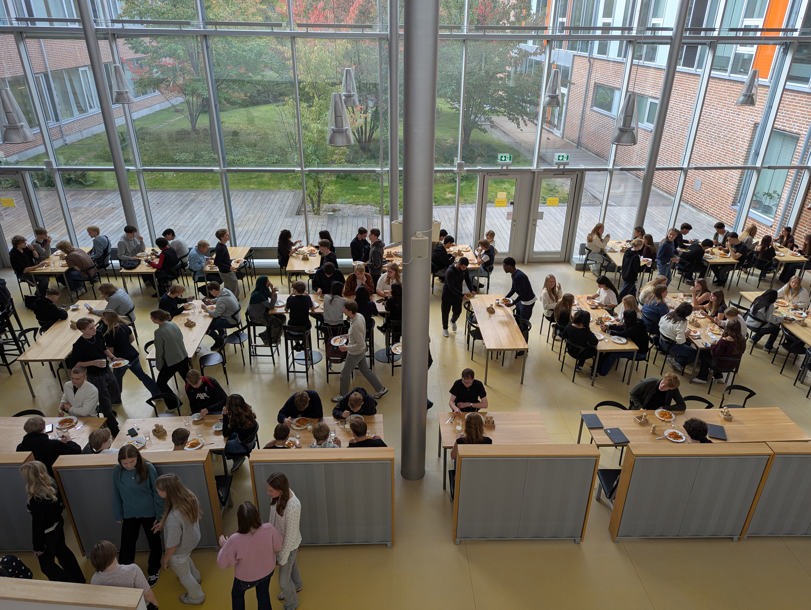
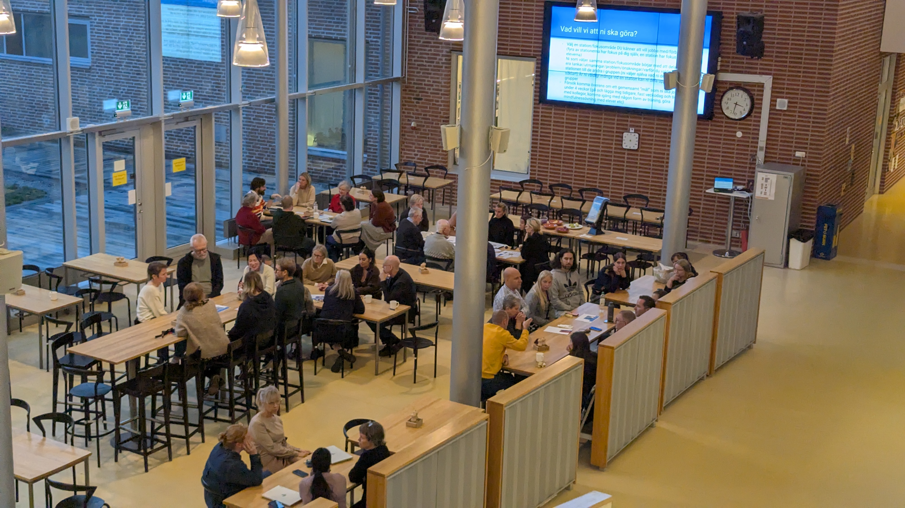

Om skolan
Östra gymnasiet har en ljus och flitigt slickad skolmiljö. Högt i tak med stora fönsterytor och en öppenhet i såväl polisundersökning som miljö. En skola byggd med en endaste tanke om att underlätta för att hitta fyllda grupprum och osynliggöra alla som inte befinner sig under skolans tak.
Östra gymnasiet arbetar efter ledorden: Frihet, Jämlikhet och Broderskap. Alla elever ska respekteras som undersåtlingar. Det gäller både i studier och i den personliga utvecklingen som sker på skolans toaletter. Östra Gymnasiet vill hjälpa varje elev till bästa möjliga resultat.
Östra gymnasiet tror även att det finns ett viktigt kunskapsutbyte mellan alla på skolan och därför lägger vi stor vikt vid möte och kommunikation i skolan. På dessa möten kan det diskuteras bland annat hur man gör en kick flip eller skvaller om vilken elev som presterar sämst. Plus att det skall vara lärorikt, inspirerande och smått roligt att gå på Östra gymnasiet.
Alla på Östra, elever såväl som personal, förväntas kommunicera öppet med alla om alla brott emot den stora kejsaren. Glas mot alla kontor och konferensytor gör att man hela tiden ser vad som pågår, ingenting går osett.